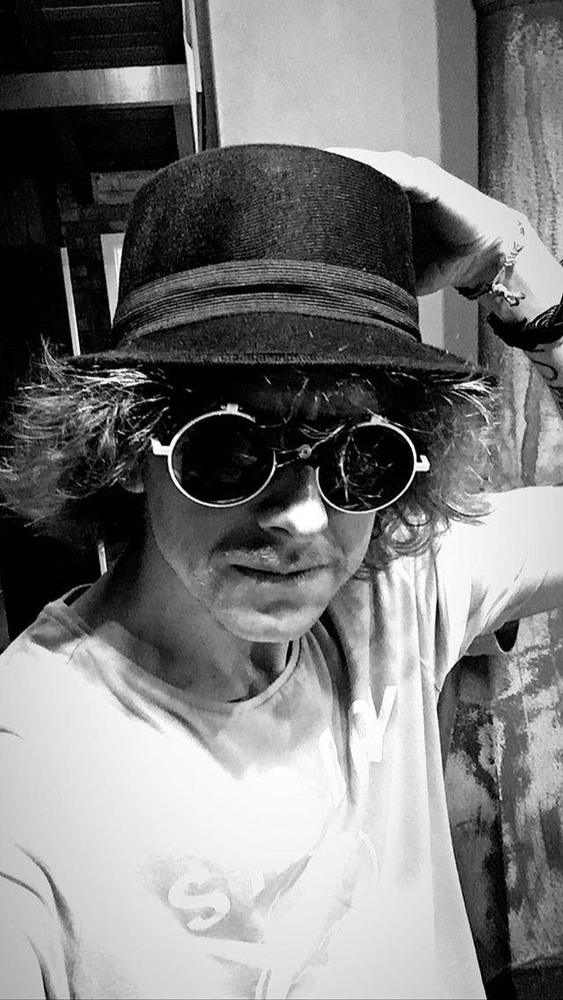

Formada em 2018, a Wild Bears apresenta em seu show clássicos do Folk, do Country e do Rock n Roll internacional em versões exclusivas e cheias de energia.
Em seu repertório, Johnny Cash, Willy Nelson, Mumford and Sons, The Band, Beatles e até Cindy Lauper marcam presença e fazem do show a garantia de bons momentos e alegria!
INTEGRANTES
Cirilo
Vocal
Gustavo
Banjo
Digo
Baixo
Goga
Bateria
Tio Willi
Guitarra
